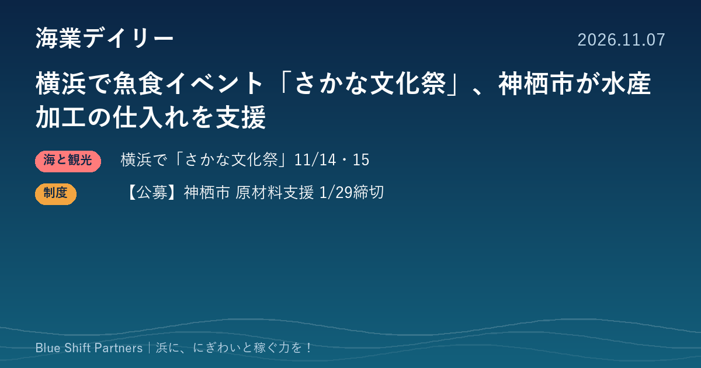

2026.11.07
横浜で魚食イベント「さかな文化祭」、神栖市が水産加工の仕入れを支援

本日は首都圏の話題を2件お届けします。横浜港大さん橋で11月14・15日に開かれる魚食推進イベントと、茨城県神栖市が始めた水産加工業者向けの原材料仕入れ支援です。
横浜港大さん橋で「さかな文化祭2026」、11月14・15日に開催
一般社団法人スマートニッチ応援団が、家族で魚と海を学べるイベント「さかな文化祭2026」を11月14日（土）・15日（日）の10時〜16時に、横浜港大さん橋国際客船ターミナルの大さん橋ホールで開きます。後援は水産庁、横浜市教育委員会、全国漁業協同組合連合会、大日本水産会などで、主催者の発表では入場無料です。約25のブースやキッチンカーが並び、水産庁の「お魚かたりべ」によるステージ、鯨肉を使った料理の試食配布、魚の名前を探すラリー、魚をさばく体験などが予定されています。
ここがポイント：子ども連れの家族に魚の魅力を伝える場は、浜の産品や漁業体験の将来の顧客づくりにつながります。出展の仕方や体験メニューの組み立ては、漁協や浜の事業者が地元で魚食イベントを企画するときの参考になります。
出典：一般社団法人スマートニッチ応援団「さかな文化祭2026」公式ページ（2026-11-05）
【公募】神栖市 水産加工原材料調達対策支援金（2027年1月29日まで）
茨城県神栖市は、地元の水揚げが大きく減り原材料の仕入れ経費が上がった水産加工業者を支援する「水産加工原材料調達対策支援金」の案内を公表しました。対象は、市内に住所か事業所があり、2025年1月1日から続けて波崎水産加工業協同組合の組合員であるか水産製品製造業の営業許可を持つ事業者で、市税の滞納がないことが条件です。前年との平均仕入れ単価の差額に2026年の仕入れ数量を掛けた額（水産物のみ、消費税相当額などを除く）の2分の1、上限50万円を支援します。提出期限は2027年1月29日で、申請書と2025・2026年の仕入れ経費がわかる書類を神栖市水産・地域整備課（波崎総合支所）へ郵送か持参で出します。
ここがポイント：水揚げ減による原料高は、加工品の値上げや生産縮小に直結します。神栖市の加工業者は仕入れ伝票の整理を早めに進め、対象になるかを市に確認しておくと安心です。
出典：神栖市「水産加工原材料調達対策支援金」（2026-11-05）
魚を「食べる・知る・体験する」場づくりと、原料高に耐える経営の下支えは、どちらも浜の稼ぐ力の土台です。イベントで生まれた関心を、地元の直売所や体験、加工品の購入へどうつなげるか。来場者の動きを見る視点で足を運んでみる価値があります。